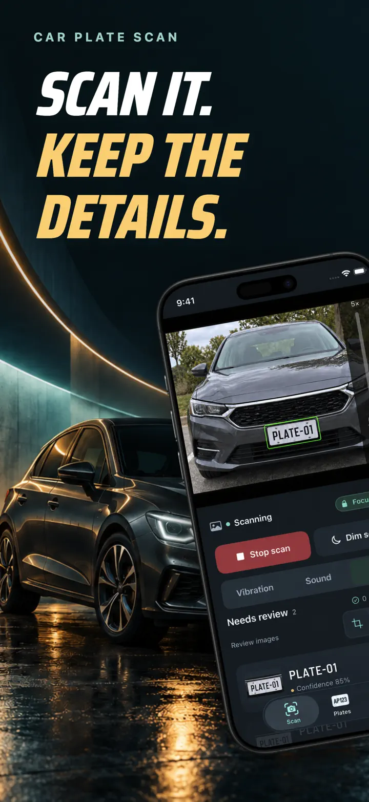

Car Plate Scan
번호판을 스캔하고 촬영 기록을 다시 확인하세요
카메라나 사진에서 차량 번호판을 읽으세요. 인식한 번호를 확인하고 세부 정보를 저장한 뒤, 검색, 지도, 즐겨찾기로 지난 기록을 찾아보세요.
App Store에서 보기
앱 정보
카메라로 실시간 스캔하거나 사진 보관함에서 사진을 선택하세요. 불확실한 인식 결과를 검토하고 번호판 텍스트를 수정할 수 있습니다. 자동 저장 및 반복 촬영 설정도 조정할 수 있습니다.
번호판 부분 이미지와 전체 사진을 촬영 시간과 함께 보관하세요. 위치 정보가 있는 경우 위치도 함께 저장됩니다. 같은 번호판을 여러 번 촬영한 기록을 다시 확인할 수 있습니다.
저장한 번호판을 검색하고 날짜별로 또는 지도에서 촬영 기록을 살펴보세요. 자주 찾는 번호판은 즐겨찾기에 추가해 빠르게 확인할 수 있습니다.
스크린샷
스크린샷은 영어로 설정된 앱 화면입니다.


개인정보 보호 및 데이터 처리
Car Plate Scan은 사용자가 촬영하거나 불러온 내용을 기록합니다. 차량 소유자를 식별하거나 차대번호(VIN), 차량 등록 정보, 차량 이력 보고서를 제공하지 않습니다.
기본 번호판 판독은 기기에서 처리됩니다. 선택 사항인 클라우드 검토는 지원되는 기기에서 Apple Private Cloud Compute를 사용하며 인터넷 연결이 필요합니다. 사용 가능 여부는 운영 체제, 기기 및 서비스 제한에 따라 달라집니다.
인식 결과가 틀릴 수 있습니다. 결과를 활용하기 전에 확인하세요. 번호판 형식과 촬영 조건이 결과에 영향을 줍니다. 운전 중에는 앱을 사용하지 말고 다른 사람의 개인정보를 존중하세요.
Car Plate Scan
카메라나 사진에서 차량 번호판을 읽으세요. 인식한 번호를 확인하고 세부 정보를 저장한 뒤, 검색, 지도, 즐겨찾기로 지난 기록을 찾아보세요.
App Store에서 보기